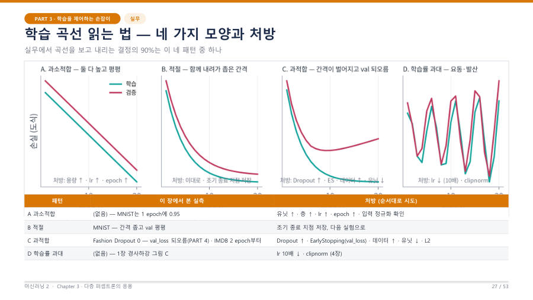

학습·검증 곡선 네 패턴 — 진단과 처방 ★★★
교수님은 "실무에서 곡선을 보고 내리는 결정의 90%는 이 네 패턴 중 하나"라고 했어요. 그래프를 보고 현상 이름 → 그래프의 근거 → 처방을 쓰는 것이 주관식 문제이고, 객관식에도 그래프가 나와요.
| 패턴 | 그래프의 근거 (왜 그런가) | 처방 (순서대로 시도) |
|---|---|---|
| A 과소적합 underfitting | 학습·검증 손실이 둘 다 높은 채 천천히 내려가거나 평평해요. 두 선의 간격은 좁아요. 모델이 학습 자체를 못 하고 있어요(용량·학습 부족). | 유닛↑ · 층↑ · 학습률↑ · epoch↑ · 입력 정규화(0~1 등) 확인 |
| B 적절 | 두 선이 함께 내려가고 간격이 좁아요. 검증은 어느 지점에서 평평해져요. 잘 배우고 있어요. | 조기 종료 지점의 모델을 저장하고 다음 실험으로 |
| C 과적합 overfitting | 학습 손실은 계속 내려가는데 검증 손실은 어느 지점부터 다시 올라가요. 간격이 점점 벌어져요. 훈련 데이터를 외우고 있어요. | Dropout↑ · EarlyStopping(val_loss) · 데이터↑(증강) · 유닛↓ · L2 |
| D 학습률 과대 | 두 선이 모두 들쭉날쭉 요동치거나 손실이 오히려 커져요(NaN까지). 한 번에 너무 크게 움직여서 바닥을 넘나들어요. | 학습률을 10배쯤 낮춤 (기울기 클리핑도 쓰지만 다음 장 내용이라 참고) |

그래프를 볼 때의 판단 순서를 외워 두면 헷갈리지 않아요.
- ① 세로축이 손실인가 정확도인가부터 봐요. 손실 그래프에서는 학습 곡선이 아래(손실이 작음)에, 정확도 그래프에서는 학습 곡선이 위에 있어요. 교수님도 수업에서 이 둘이 반대라고 짚었어요.
- ② 두 줄이 요동치면 D(학습률 과대)예요.
- ③ 두 줄이 둘 다 나쁜 채 정체하면 A(과소적합)예요.
- ④ 학습은 좋아지는데 검증이 다시 나빠지고 간격이 벌어지면 C(과적합)예요.
- ⑤ 그 외에 함께 좋아지고 간격이 좁으면 B(적절)예요.
간격 벌어짐 = 과적합, 둘 다 나쁨 = 과소적합, 들쭉날쭉 = 학습률 과대예요. 처방은 방향이 반대예요. 과소적합은 모델을 키우고(유닛·층·epoch·학습률↑), 과적합은 모델을 억제해요(Dropout·L2·조기 종료·데이터↑·유닛↓). 과적합인데 유닛을 늘리라는 보기는 틀린 보기예요.
학습률이 너무 작은 경우도 곡선은 과소적합(A)처럼 보여요. 손실이 거의 안 내려가요. 이때는 학습률을 올리거나 epoch을 늘려요. 반대로 학습률이 너무 큰 D는 내리는 것이 처방이라서, 학습률은 올리는지 내리는지가 곡선 모양으로 갈려요.
주관식 답안의 틀은 세 칸이에요. 아래 모범 답안을 소리 내어 읽어 보면 외워져요.
(현상) 과적합이다. (근거) 학습 손실은 epoch이 지날수록 계속 감소하지만 검증 손실은 어느 epoch 이후 다시 증가하여 두 곡선의 간격이 벌어진다. 모델이 훈련 데이터를 암기하고 있다는 뜻이다. (처방) 검증 손실이 최소인 epoch에서 EarlyStopping(monitor='val_loss', restore_best_weights=True)으로 멈추고, Dropout 비율을 높이거나 L2 정규화, 데이터 증강, 은닉 유닛 수 축소를 적용한다.
(과소적합) 학습 손실과 검증 손실이 모두 높은 채 정체되고 간격이 좁으므로 모델이 학습을 못 하는 과소적합이다. 은닉 유닛·층 수를 늘리고, 학습률이나 epoch을 늘리며, 입력 정규화를 확인한다. (학습률 과대) 두 곡선이 모두 크게 요동하거나 발산하므로 학습률이 너무 크다. 학습률을 10배 정도 낮춘다.
잠깐 확인 — 학습 손실 0.02, 검증 손실이 0.26에서 0.40으로 올라가는 중이면 어떤 패턴이고 첫 처방은?
과적합(C)이에요. 검증 손실이 최소였던 지점에서 멈추는 조기 종료와 Dropout 강화가 가장 먼저 쓰는 싸고 안전한 처방이에요.
화면을 가리고 "학습·검증 곡선 네 패턴 — 진단과 처방 ★★★"을(를) 친구에게 설명하듯 한 문장으로 말해 보세요. 막히면 위의 빨간 칸만 다시 보고 넘어가요.
자료: 3~4주차 · 머신러닝2_chapter2_student_ver.pdf(PART 6 p.35–36, PART 7 p.55–57) · 머신러닝03.txt, 머신러닝04.txt, 머신러닝07.txt(10/19 중간고사 복습)